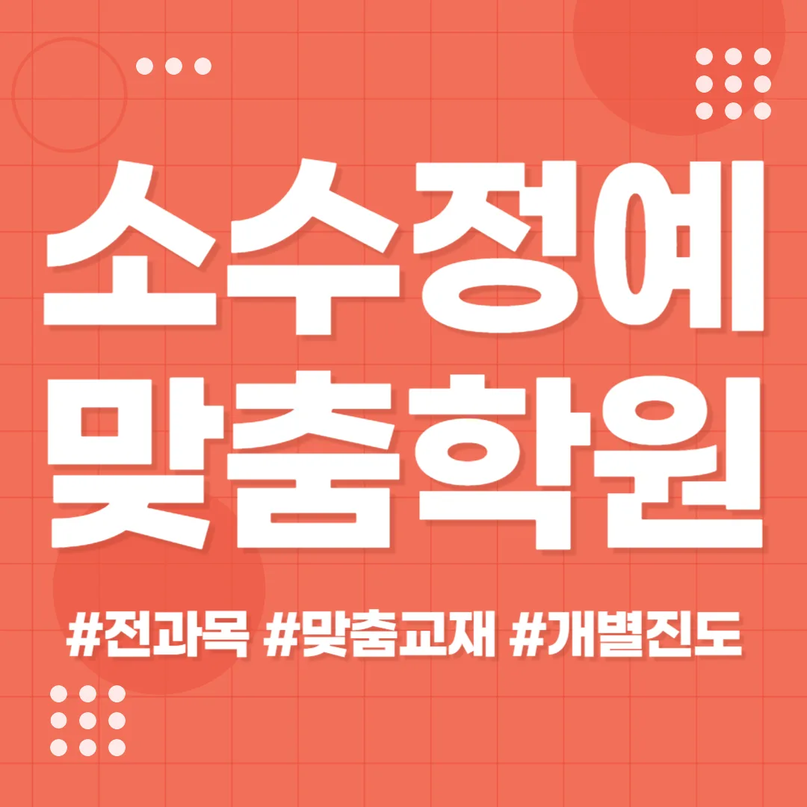

학부모님께서는 먼저 교육기관의 강사진 경력과 지도 스타일을 확인해 보세요. 선생님들의 전공 분야가 자녀의 목표와 맞는지 살펴보는 것이 중요해요. 학생은 직접 체험 수업에 참여해 분위기를 느껴볼 수 있어요. 교육기관은 학습 관리 시스템이 투명하게 운영되는지 체크해 보세요. 동춘마을 주변에서는 교통 편의성과 주변 환경도 큰 영향을 미치니 현장 방문을 권해요. 마지막으로 수강료 대비 제공되는 교육 콘텐츠와 사후 관리 서비스를 비교해 보는 것이 현명한 선택이에요.
학년마다 학습 요구가 다르기 때문에 맞춤형 접근이 필요해요. 동춘마을은 다양한 연령층이 모여 있어 동춘마을 초등 국영수학원 선택 시 세심한 고려가 요구됩니다. 초등 저학년은 기초 개념을 시각 자료와 놀이를 통해 흥미롭게 전달하는 것이 효과적이에요. 초등 고학년은 스스로 문제를 탐구하고 정리할 수 있는 공간이 중요해요. 중학생은 전과목을 통합적으로 관리할 수 있는 시스템이 필요하죠. 고등학생은 심화 분석과 논리 전개 능력 강화가 핵심이에요. 전체 학년은 실제 생활과 연결된 사례 학습이 동기 부여에 큰 도움이 돼요.
이 동춘마을 초등 국영수학원은 개별 학습 태도 변화를 목표로 설계된 코칭 프로그램을 운영해요. 주요 대상은 독서와 논술 능력을 동시에 강화하고 싶은 초중고 학생이며, 커리큘럼은 독서논술A와 B 두 단계로 나뉘어 각각 90,000원과 150,000원에 제공돼요. 매주 두 차시, 70분씩 진행되는 핵심 문제 풀이 시간에 집중력을 높이고, 아침 10분 복습으로 전날 학습 내용을 재정리하는 습관을 형성해요. 이러한 체계적인 접근 덕분에 학생 스스로 학습 목표를 설정하고 성취감을 느낄 수 있어요.
| 학원명 | 와와학습코칭학원 |
| 수강료 | 독서논술A 90,000원 | 독서논술B 150,000원 |
CURRICULUM
모의시험 진행 후 시간 관리 훈련을 실시해요. 학생 실수를 기록하고 분석하는 구조를 통해 개선 포인트를 도출해요. 실천 계획을 점검하고 실행 흐름을 교체함으로써 생활 습관 개선과 성과 안정화가 연결돼요. 매주 진행되는 피드백 세션에서 학습 전략을 재조정해요.
인근 학생들은 영어 독해 점수가 70점대에서 정체되어 있다가 92점까지 오르는 사례가 많아요. 이는 문장 구조 분석 효과 덕분이거든요. 목표별 피드백 회고 일지를 작성할 수 있도록 돕는 사용법을 익히면 실력이 팍팍 늘어요. 단순히 많이 읽는 것보다 구조를 이해하는 것이 중요해요.
첫 번째로 정보 비대칭을 해소하기 위해 학부모와 정기적인 상담 시간을 마련하고, 학습 목표와 진행 상황을 투명하게 공유해요. 두 번째로 한 과목에 집중하기보다 여러 과목을 고르게 배분해, 지식의 균형을 유지하고 과부하를 방지해요. 세 번째로 반복 분산 학습을 적용해, 장기 기억을 강화하고 시험 직전 급격한 암기를 피해요. 네 번째로 전체 구조 파악력을 키우기 위해 큰 틀에서 시작해 세부 내용으로 점진적으로 들어가요. 다섯 번째로 말장난이나 언어유희를 활용해 학습 내용을 재미있게 전달하고, 기억에 오래 남게 해요. 여섯 번째로 개별 진도에 맞춘 맞춤 피드백을 제공해, 각 학생의 강점과 약점을 정확히 짚어줘요. 일곱 번째로 학습 목표를 시각화한 차트를 사용해, 진척 상황을 한 눈에 확인하고 동기 부여를 지속해요. 마지막으로 정기적인 성과 리뷰를 통해 전략을 재조정하고, 지속 가능한 성장 로드맵을 유지해요.
와와학습코칭센터는 고등학교 1학년으로 꾸준히 공부하지만 응용 문제에서 흔들리는 학생에게 특히 적합해요. 학교 진도에 맞춘 보강 수업이 필요하고, 자기 주도 학습 능력을 키우고 싶은 학생에게도 도움이 돼요. 목표가 명확하고 피드백을 적극 활용하려는 자세가 있다면 학습 효과가 크게 상승할 거예요. 부모님이 함께 참여해 지도 방식을 공유하면 가정에서도 학습 분위기가 살아나요.
동춘마을 초등 국영수학원을 다니면서 공부하는 방식이 크게 달라졌어요. 매일 수업 후에 받은 피드백을 바로 적용하면서 점점 자신감이 생겼어요. 특히 영어 시간에 교실 창에 자외선 차단 필름이 있어 눈이 편안했어요. 방학 특강에 참여하면서 새로운 학습 목표를 잡고 실천했어요. 그 결과 문제를 푸는 속도가 눈에 띄게 빨라졌고, 선생님께서도 성장한 모습을 칭찬해 주셨어요. 이제는 스스로 학습 계획을 세우는 것이 자연스러워졌어요.

| 학원명 | 와와학습코칭학원 |
| 등록번호 | 제3918호 |